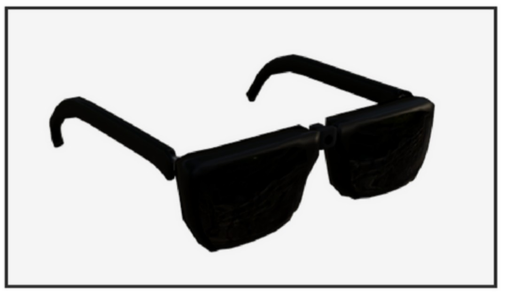
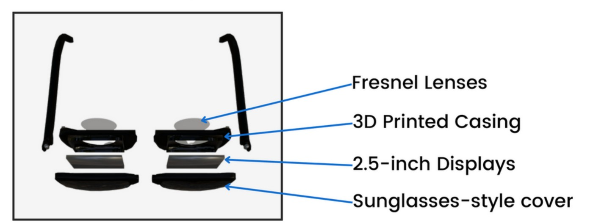

The problem
Plenty of jobs are done across several monitors. Software development and stock trading are the obvious ones. Monitors are expensive, and they permanently occupy a desk whether or not you are using them.
The idea: tether it, don't make it standalone
The headset presents virtual monitors that float in the wearer's real surroundings, so a desk's worth of screens costs a pair of glasses and takes up no space when you put them down.
The design decision the whole project rests on is that these glasses are not a standalone computer. Alternatives like the Microsoft HoloLens are prohibitively expensive for most of the use cases I cared about, and much of that cost and weight is the onboard computer you are wearing on your face. Someone using this at a desk already owns a perfectly good computer a cable's length away. Moving the processing there makes the headset simpler, lighter and dramatically cheaper, and it constrains the project to the one hard problem that remains, which is getting frames to the wearer's eyes fast enough.



The proof of concept
To test whether the idea held up, I built a working headset out of parts I could get hold of: an Arduino to read the sensors and talk to the host computer, an inertial measurement unit for head orientation, a wide-angle USB camera for the wearer's surroundings, a Samsung phone display, and a Google Cardboard body held on with a headband.
The software
The application is built in Unity and draws both the virtual monitors and the wearer's surroundings inside the headset. Orientation data from the IMU rotates the user's view, so the virtual monitors stay put in the room as the wearer looks around. The front-facing camera feeds video of the real environment into that same view. This is video pass-through rather than optical see-through, which is what makes a build from cheap opaque displays possible at all.
What the prototype proved, and what it exposed
The concept worked, and the two problems it surfaced are both about the tether, which is exactly where a tethered design should be judged.
Latency dominates everything. The proof of concept made it obvious that the connection between the computer and the headset has to be genuinely low-latency. A slow refresh rate is not a comfort inconvenience here; it causes nausea, because the view no longer keeps up with the wearer's head. Any serious version of this has to solve that before it solves anything else.
Cabling was worse than expected. The cable substantially degraded the experience in day-to-day use, in a way that is easy to dismiss on paper. A subsequent design has to treat cable management as a first-class part of the industrial design rather than an afterthought.
Building it also taught me a good deal about how AR and VR headsets are actually put together, and how to drive an Arduino from Unity. Assembling the electronics by hand is what taught me to solder properly.